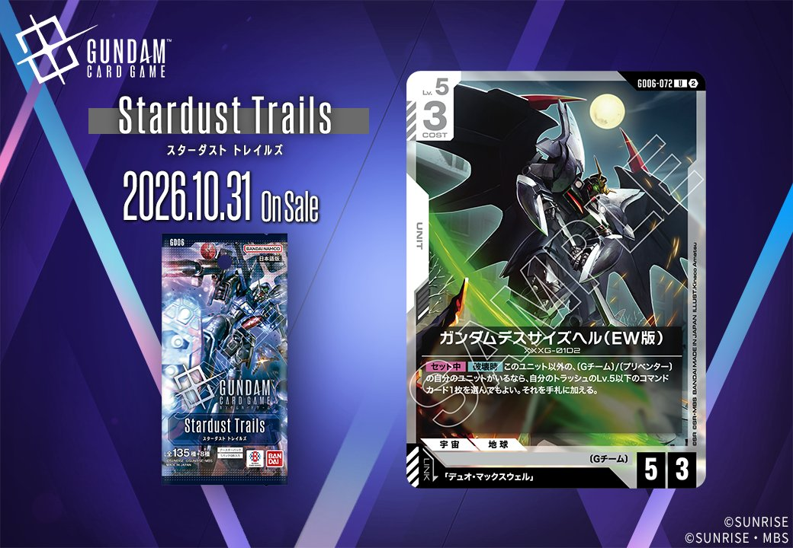
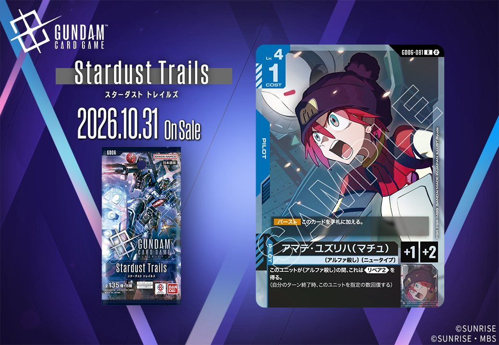
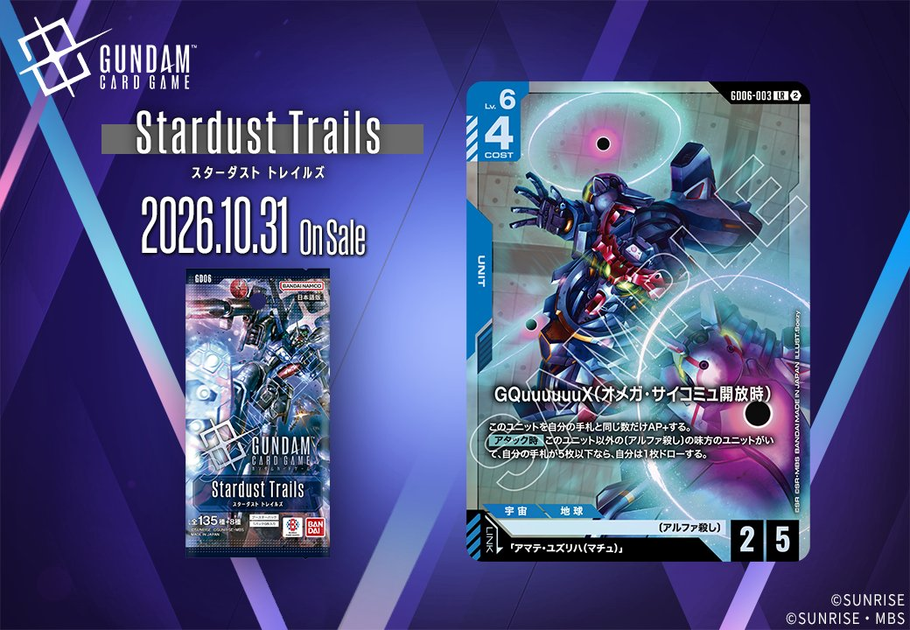

今回は拡張パック「GD06 Stardust Trails」より、新カード4枚をご紹介します。白のUNIT「ガンダムデスサイズヘル(EW版)」(GD06-072)はリンク条件に「デュオ・マックスウェル」を指定しており、同日公開の白のPILOT「デュオ・マックスウェル」(GD06-098)とリンクで結ばれる組合せとなっています。UNITとPILOTが同時に公開されたことで、リンク先を別途探す必要なくリンク前提の運用を組める点が、この2枚をセットで見る価値です。あわせて青のPILOT「アマナ・ユズリハ(マチュ)」(GD06-081)と青のUNIT「νガンダム(オメガ・サイコミュ開放時)」(GD06-003)も公開されています。

デュオ・マックスウェル (GD06-098)
| 色 | 白 | タイプ | PILOT |
| Lv | 4 | コスト | 1 |
| 補正 AP | 1 | 補正 HP | 2 |
| 特徴 | 〔Gチーム〕、〔オペレーションメテオ〕 | ||
効果: 【バースト】このカードを手札に加える。【リンク中】このユニットがレストの間、味方のベースはこれのLv.以下の相手のユニットからダメージを受けない。
コスト1でAP1/HP2、Lv.4という軽量パイロットです。【リンク中】の効果は、このユニットがレストの間、味方のベースがLv.4以下の相手ユニットからダメージを受けなくなるというもので、アタックしてレストになった後の相手ターンにベースを守れる点が実用的です。反面Lv.5以上のユニットには無効なため、相手の盤面のレベル帯で価値が変わります。同日公開のガンダムデスサイズヘル(EW版)(GD06-072)とはリンクが成立し、そちらは【セット中】【破壊時】に条件を満たせばトラッシュのLv.5以下のコマンドを回収できるため、リンク維持自体が攻守の支えになります。【バースト】で手札に加わる点も無駄がありません。

ガンダムデスサイズヘル(EW版) (GD06-072)
| 色 | 白 | タイプ | UNIT |
| Lv | 5 | コスト | 3 |
| AP | 5 | HP | 3 |
| 特徴 | 〔Gチーム〕、〔プリベンター〕 | ||
| リンク条件 | 「デュオ・マックスウェル」 | ||
効果: 【セット中】【破壊時】このユニット以外の、〔Gチーム〕/〔プリベンター〕の自分のユニットがいるなら、自分のトラッシュのLv.5以下のコマンドカード1枚を選んでもよい。それを手札に加える。
コスト3でAP5/HP3という前寄りの数値を持ち、HP3ゆえに討ち取られやすい点を【セット中】【破壊時】でリターンに変換する構成です。パイロットをセットしている間に限り、他に〔Gチーム〕/〔プリベンター〕の自分のユニットがいれば、トラッシュのLv.5以下のコマンドカード1枚を手札に戻せます。条件は横並べ前提で、ウイングガンダムゼロ（EW版）やガンダムデスサイズヘル（GD05-078）、リーオーなど〔Gチーム〕ユニットが並ぶ盤面なら満たしやすいでしょう。リンク先のデュオ・マックスウェルをセットすればリンクが成立し、レスト中に味方のベースを守る【リンク中】効果も常駐するため、同一ユニット上での運用は構築面でも噛み合います。



アマナ・ユズリハ(マチュ) (GD06-081)
| 色 | 青 | タイプ | PILOT |
| Lv | 4 | コスト | 1 |
| 補正 AP | 1 | 補正 HP | 2 |
| 特徴 | 〔アルファ殺し〕、〔ニュータイプ〕 | ||
効果: 【バースト】このカードを手札に加える。このユニットが〔アルファ殺し〕の間、これは《リペア2》を得る。(自分のターン終了時、このユニットを指定の数回復する)
コスト1で搭載でき、AP+1／HP+2という控えめな数値を補うのが〔アルファ殺し〕条件の《リペア2》です。搭載先が〔アルファ殺し〕を持つユニットである限り、自分のターン終了時に2ダメージ分回復するため、バトルで受けた傷を毎ターン戻しながら盤面に居座る運用が狙えます。HP+2の底上げと合わせれば、相打ち圏内だったユニットが生き残る場面も増えるでしょう。一方で条件は搭載先の特徴に依存し、リンクを持たないため〔アルファ殺し〕を持つユニットの採用枚数がそのまま価値を左右します。【バースト】は手札に加えるのみと控えめで、あくまで低コストの継続支援役として見るのが妥当です。



νガンダム(オメガ・サイコミュ開放時) (GD06-003)
| 色 | 青 | タイプ | UNIT |
| Lv | 6 | コスト | 4 |
| AP | 2 | HP | 5 |
| 特徴 | 〔アルファ殺し〕 | ||
| リンク条件 | 「アマテ・ユズリハ(マチュ)」 | ||
効果: このユニットを自分の手札と同じ数だけAP+する。【アタック時】このユニット以外の〔アルファ殺し〕の味方のユニットがいて、自分の手札が5枚以下なら、自分は1枚ドローする。
コスト4でAP2/HP5と、素のAPは控えめですが、手札の枚数分だけAP+する常在的な修整により、手札を抱えたまま攻める構えなら打点が大きく伸びます。HP5は同コスト帯として耐久面で扱いやすく、殴り返しにも残りやすい点が利点です。【アタック時】の条件は、自身以外の〔アルファ殺し〕の味方のユニットがいて、かつ自分の手札が5枚以下であること。手札が多いほどAPが上がる一方、ドローは手札5枚以下でしか狙えないため、補充と打点のどちらを取るかを毎ターン選ぶ設計になっています。リンク先は「アマテ・ユズリハ(マチュ)」で、〔アルファ殺し〕を複数並べる構築との噛み合いが前提のカードです。
関連カード
-
 ウイングガンダムゼロ（EW版）(GD05-067)白系デッキ内採用率1.1% (74デッキ)
ウイングガンダムゼロ（EW版）(GD05-067)白系デッキ内採用率1.1% (74デッキ) -
 カトル・ラバーバ・ウィナー(GD05-100)白系デッキ内採用率0.3% (23デッキ)
カトル・ラバーバ・ウィナー(GD05-100)白系デッキ内採用率0.3% (23デッキ) -
 ヒイロ・ユイ(GD05-098)白系デッキ内採用率0.3% (22デッキ)
ヒイロ・ユイ(GD05-098)白系デッキ内採用率0.3% (22デッキ) -
 ガンダムデスサイズヘル（EW版）(GD05-078)白系デッキ内採用率0.1% (7デッキ)
ガンダムデスサイズヘル（EW版）(GD05-078)白系デッキ内採用率0.1% (7デッキ) -
 リーオー(GD05-077)白系デッキ内採用率0.1% (7デッキ)
リーオー(GD05-077)白系デッキ内採用率0.1% (7デッキ) -
 火消しの風(GD05-119)白系デッキ内採用率0.2% (16デッキ)
火消しの風(GD05-119)白系デッキ内採用率0.2% (16デッキ) -
 デュオ・マックスウェル(GD06-098)NEW白系 — リンク先（新カード）
デュオ・マックスウェル(GD06-098)NEW白系 — リンク先（新カード） -
 デュオ・マックスウェル(GD01-090)緑系デッキ内採用率1% (68デッキ)
デュオ・マックスウェル(GD01-090)緑系デッキ内採用率1% (68デッキ) -
 デュオ・マックスウェル(GD01-090_p1)緑系デッキ内採用率0% (0デッキ)
デュオ・マックスウェル(GD01-090_p1)緑系デッキ内採用率0% (0デッキ) -
 デュオ・マックスウェル(GD01-090_p2)緑系デッキ内採用率0% (0デッキ)
デュオ・マックスウェル(GD01-090_p2)緑系デッキ内採用率0% (0デッキ)